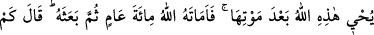

başka her şeyden uzaklaştıracak en yüce kemâl noktasına ulaştıracaktır. Böylece mürid
kendi varlığından sıyrılarak Allah ile var olma şerefine yücelecektir.
Kişinin özü bozulur ve kendisini kemale ulaştıracak kabiliyetlerden uzak kalırsa tıpkı
Nemrûd gibi “Ben de diriltir, ben de öldürürüm” der. Fakat sözünü ıslâh eder ve
istidâdlarını kemal derecesini bulmaya yönlendirirse “Allah’tan başka hiçbir mevcut
yoktur.” demeye başlar. Nemrûdlaşan nefsini, Allah’a îmân edip tağutu reddedinceye ve
Allah’tan başka hiçbir varlık tanımayıncaya kadar “La ilâhe illallah” balyozuyla
döver. Zira Allah müşrik bir topluluğu tevhid âlemine ulaştırmaz. Şirk büyük bir
zülumdür. İnsanoğlu şirk sebebiyle sapıklığa düşmüş ve sıratı müstakimden
uzaklaşmıştır. Bu îzâhlar et-Te’vîlâtü’n-Necmiyye’den alınmıştır.
Akl-ı selim sahibi kimseye, gizli açık şirkten kurtulması ve nefsini kötü ahlaktan
temizleyip mal ve evlada aldırmadan Melik-i Müteâl olan Allah’a yönelmesi gerekir.
Büyük bir taşın üzerinde şöyle yazıldığını gördüm:
“Dünyalık bir şey ile sevinmen senin Allah’tan uzak olduğunu gösterir. Elindeki şeye
güvenmen Allah’a bağlılığının azlığına delîldir. Zorluk zamanlarında insanlardan
yardım beklemen Allah’ı tam mânâsıyla bilmediğini gösterir”.
Sa’dî der ki:
İşittim ki iyi tabiatlı Sultan Cemşid,
Bir çeşme taşının üzerine şunları yazdırmış:
Bu çeşmeye bizim gibi çok kimse geldi
Ve gitti, bu dünyaya gözlerini kapadı.
Ben mertlik ve kuvvetle dünyayı tuttum.
Lâkin ne fayda. Saltanatı kendimle götüremedim.
Herkes bu dünyada ektiğini biçmeye gidiyor;
Kalan ise iyi veya kötü namdan başkası değil.
Ya Rabb! Bizleri ömrü uzun, ameli güzel ve emeli kısa olanlardan eyle! Amin.
259. Yahut görmedin mi o kimseyi ki, evlerinin duvarları çatıları üzerine çökmüş
(alt üst olmuş) bir kasabaya uğradı; “ölümünden sonra Allah bunları nasıl diriltir